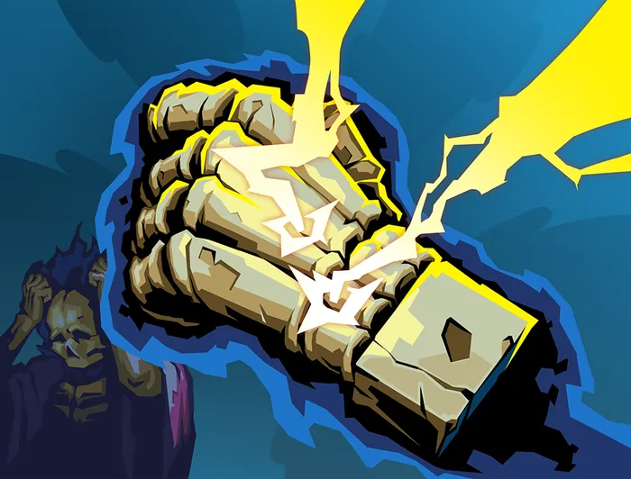
1Garde du corps
Invoquez pour 5.
Amélioré +
Invoquez pour 7.

Édition La Nécrolieuse · Cartouche slay_necrobinder.gba
« Elle ne combat jamais seule. »
Les PV les plus bas de la Tour, mais un garde du corps squelette qui grandit à chaque tour grâce au Phylactère enchaîné. Protégez Titos, marquez vos proies de Fatalité, et laissez la mort faire son œuvre.
Liée à jamais aux âmes errantes de la Tour, la Nécrolieuse chemine escortée de Titos, un familier squelettique qu'elle relève encore et encore. Fragile de corps, elle compense par une présence dédoublée sur le champ de bataille.
Idéal pour les joueurs qui aiment les invocations, les effets à retardement et les parties à haut risque.

La Nécrolieuse combat avec Titos, son familier squelette : « Invoquez » lui donne des PV, il encaisse les coups à sa place et frappe avec Déchaînement. La Fatalité marque les ennemis pour une mort certaine, et les Âmes ajoutées à la pioche nourrissent ses sortilèges.

1Invoquez pour 5.
Invoquez pour 7.
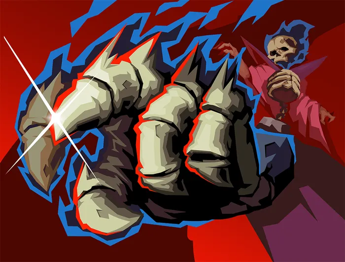
1Titos inflige 6 dégâts.
Inflige un montant de dégâts supplémentaires égal aux PV actuels de Titos.
Titos inflige 9 dégâts.
Inflige un montant de dégâts supplémentaires égal aux PV actuels de Titos.
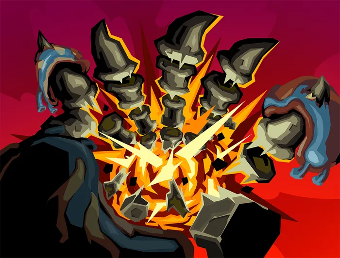
1Si Titos est en vie, il inflige 9 dégâts à TOUS les ennemis, et vous gagnez 9 d'Armure.
Titos périt.
Si Titos est en vie, il inflige 12 dégâts à TOUS les ennemis, et vous gagnez 12 d'Armure.
Titos périt.
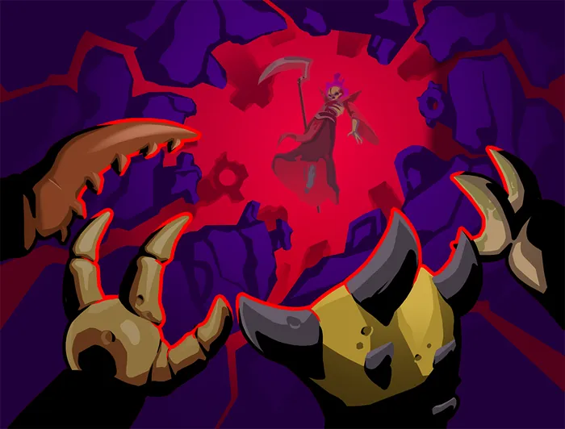
2Appliquez 21 de Fatalité et Affaibli (1) à TOUS les ennemis.
Appliquez 26 de Fatalité et Affaibli (1) à TOUS les ennemis.
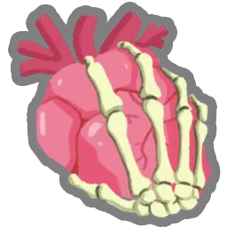
Au début de votre tour, Invoquez pour 1.
Choisissez l’apparence de La Nécrolieuse au lancement de chaque partie.
La bure sombre bordée d'un halo spectral vert d'eau.
Une aura violacée incandescente de magie interdite.
Le noir absolu des tombeaux millénaires de la Tour.
Les bandelettes tressées de fils d'or pur des défunts rois.
Ce qui est déjà implémenté dans le code du jeu, sur l'ensemble des cartes, reliques et mécaniques de La Nécrolieuse.
Titos inflige 6 dégâts.
Inflige un montant de dégâts supplémentaires égal aux PV actuels de Titos.
Titos inflige 9 dégâts.
Inflige un montant de dégâts supplémentaires égal aux PV actuels de Titos.
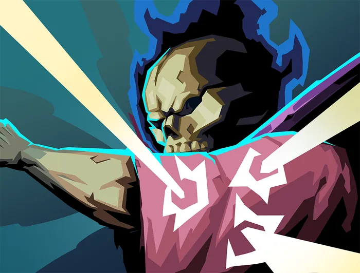
1Gagnez 5 d'Armure.
Gagnez 8 d'Armure.
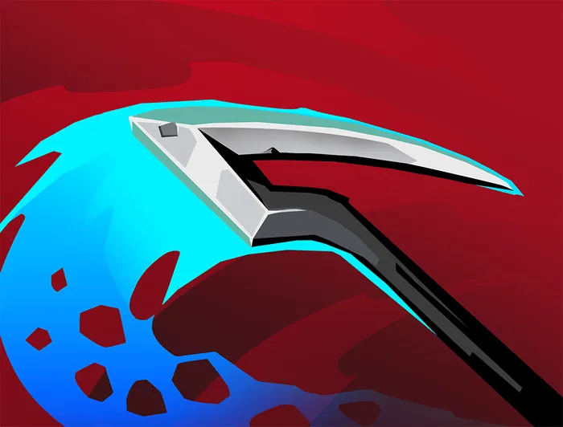
1Infligez 6 dégâts.
Infligez 9 dégâts.
Invoquez pour 5.
Invoquez pour 7.
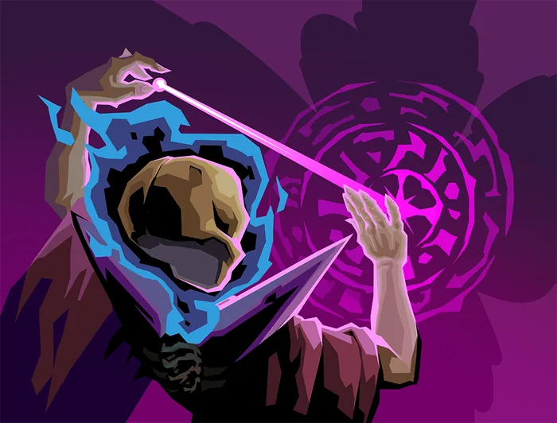
1Au prochain tour, Invoquez pour 2 et gagnez 2 ●.
Au prochain tour, Invoquez pour 3 et gagnez 3 ●.
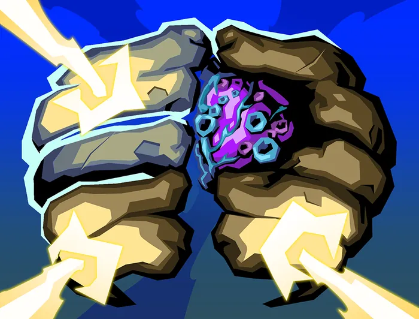
1Gagnez 5 d'Armure.
Appliquez 7 de Fatalité sur TOUS les ennemis.
Gagnez 6 d'Armure.
Appliquez 11 de Fatalité sur TOUS les ennemis.
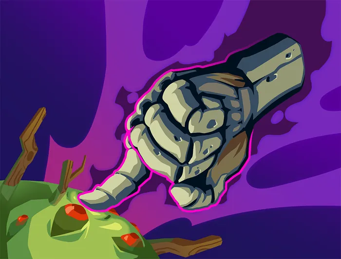
0Titos inflige 6 dégâts.
Titos inflige 9 dégâts.
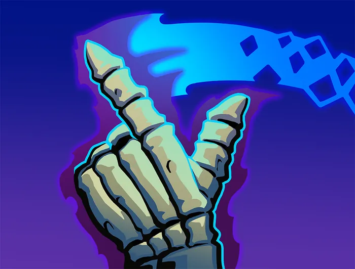
1Titos inflige 7 dégâts.
Ajoutez Retenue à une carte dans votre Main.
Titos inflige 10 dégâts.
Ajoutez Retenue à une carte dans votre Main.
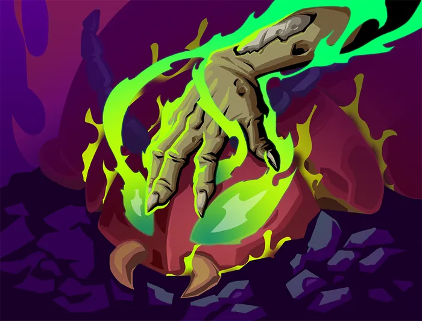
1Infligez 10 dégâts.
Améliorez 2 cartes aléatoires de votre Défausse.
Infligez 12 dégâts.
Améliorez 3 cartes aléatoires de votre Défausse.
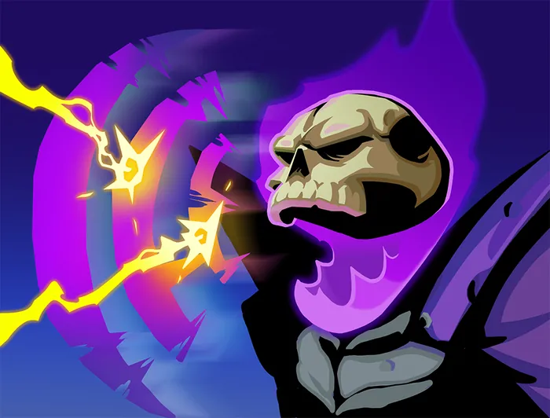
1Éthéré.
Gagnez 6 d'Armure.
Appliquez Affaibli (1).
Éthéré.
Gagnez 9 d'Armure.
Appliquez Affaibli (1).
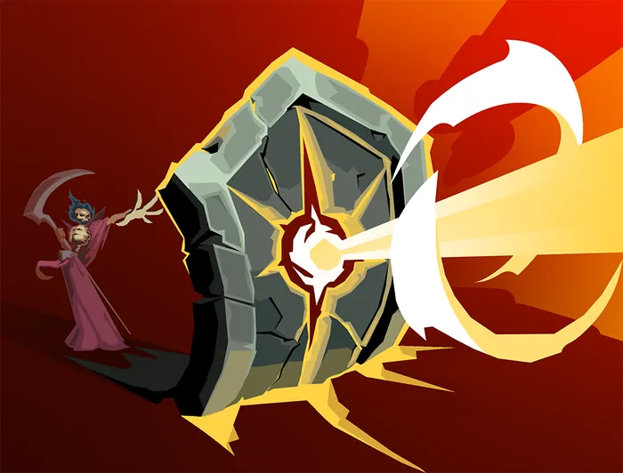
1Infligez 4 dégâts.
Placez une carte de votre Défausse dans votre Main.
Épuisement.
Infligez 6 dégâts.
Placez une carte de votre Défausse dans votre Main.
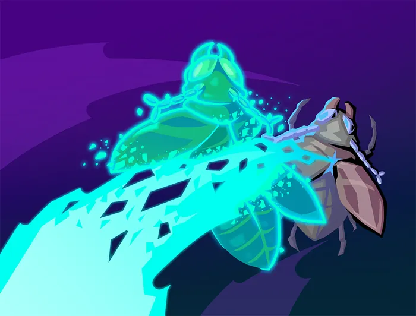
1Infligez 10 dégâts.
Ajoutez une Âme à votre Pioche.
Infligez 13 dégâts.
Ajoutez une Âme+ à votre Pioche.
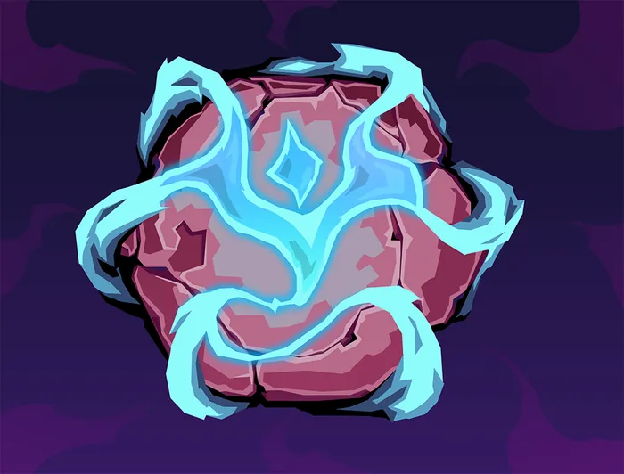
0Gagnez 1 ●.
Épuisement.
Retenue.
Gagnez 1 ●.
Épuisement.
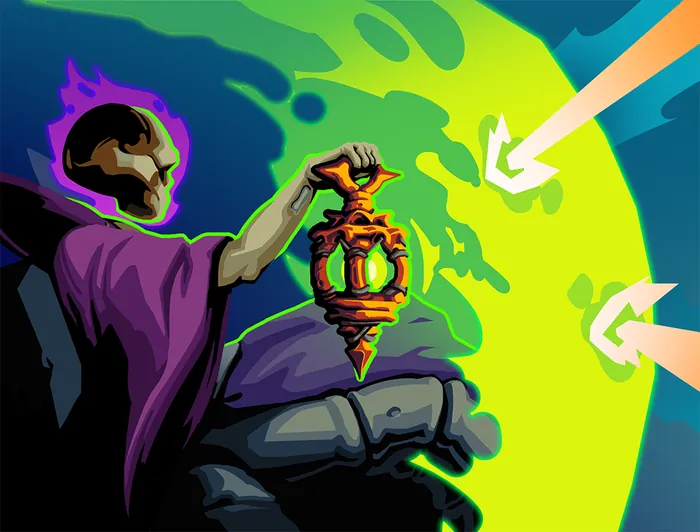
1Gagnez 8 d'Armure.
Ajoutez une Âme à votre Pioche.
Gagnez 11 d'Armure.
Ajoutez une Âme à votre Pioche.
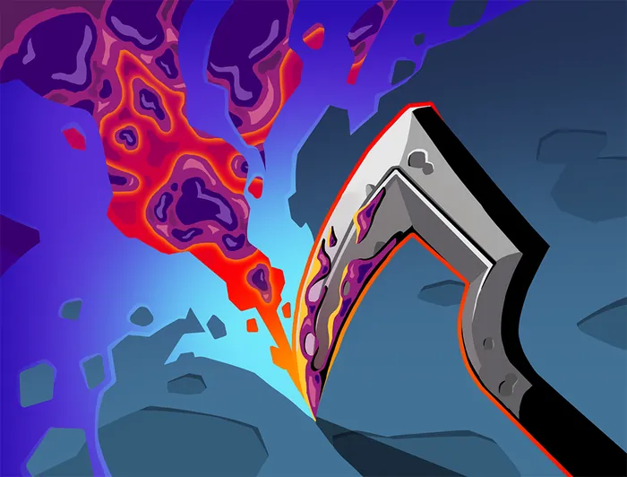
1Infligez 8 dégâts.
Appliquez un montant de Fatalité égal aux dégâts infligés.
Infligez 10 dégâts.
Appliquez un montant de Fatalité égal aux dégâts infligés.
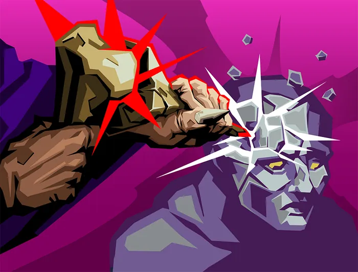
1Infligez 9 dégâts.
Ajoutez Éthéré à une carte dans votre Main.
Infligez 12 dégâts.
Ajoutez Éthéré à une carte dans votre Main.
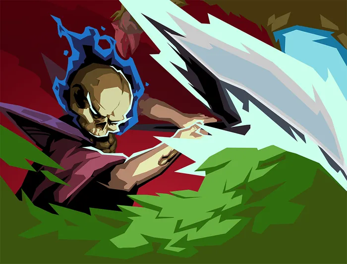
3Retenue.
Infligez 27 dégâts.
Retenue.
Infligez 33 dégâts.
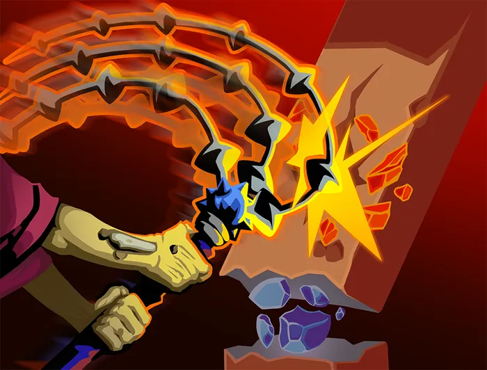
1Appliquez 13 de Fatalité.
Piochez 1 carte.
Appliquez 16 de Fatalité.
Piochez 2 cartes.
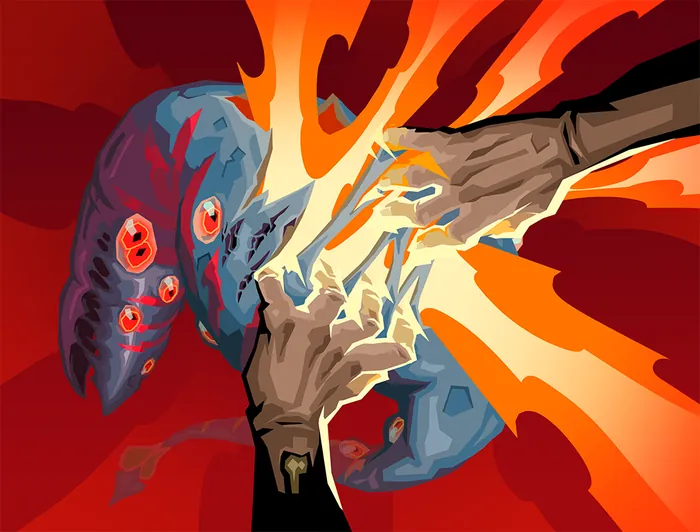
1Éthéré.
Infligez 13 dégâts.
Éthéré.
Infligez 17 dégâts.
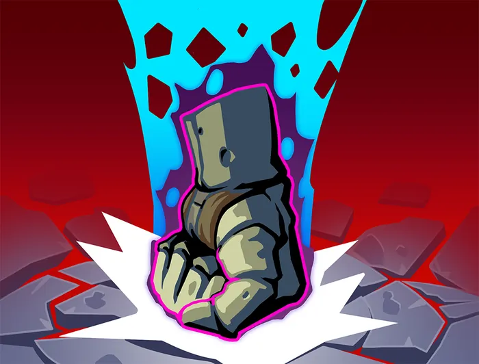
2Titos inflige 12 dégâts.
Cette carte coûte 0 ● si Titos a déjà attaqué pendant ce tour.
Titos inflige 16 dégâts.
Cette carte coûte 0 ● si Titos a déjà attaqué pendant ce tour.
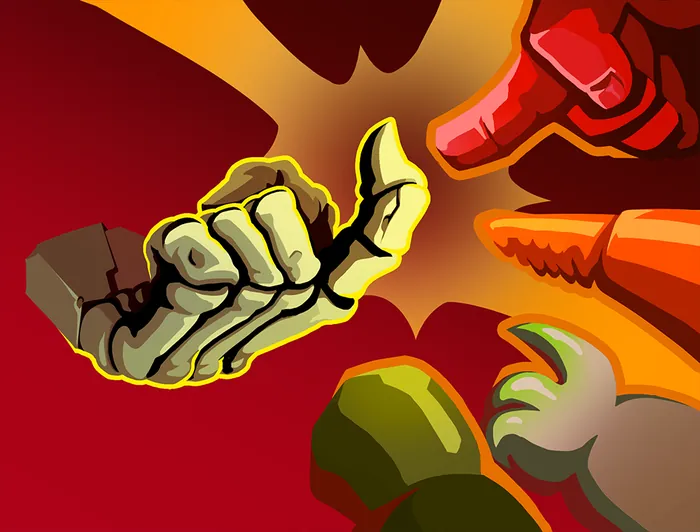
2Invoquez pour 4.
Gagnez 7 d'Armure.
Invoquez pour 5.
Gagnez 9 d'Armure.
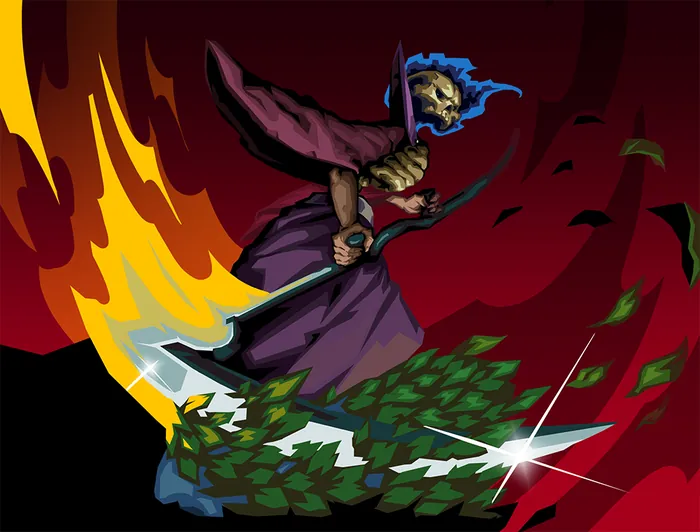
1Retenue.
Infligez 8 dégâts à TOUS les ennemis.
Retenue.
Infligez 11 dégâts à TOUS les ennemis.
Éthéré.
Infligez 7 dégâts.
Appliquez Vulnérable (1).
Éthéré.
Infligez 8 dégâts.
Appliquez Vulnérable (2).
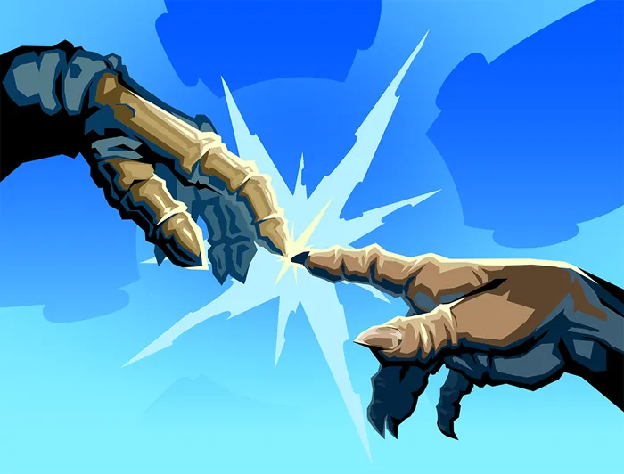
1Invoquez pour 6.
Épuisement.
Invoquez pour 9.
Épuisement.
Perdez 2 de Force.
Gagnez 1 ● au début de chaque tour.
Perdez 1 de Force.
Gagnez 1 ● au début de chaque tour.
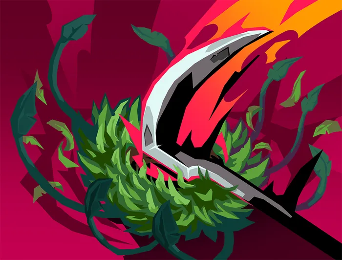
1Infligez 10 dégâts.
L'efficacité de Vulnérable et Affaibli sur l'ennemi est doublée pendant les 2 prochains tours.
Infligez 12 dégâts.
L'efficacité de Vulnérable et Affaibli sur l'ennemi est doublée pendant les 3 prochains tours.
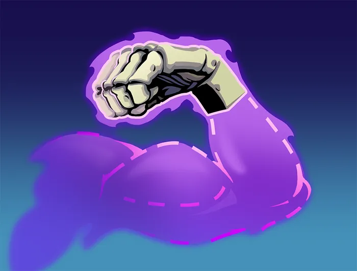
1Les attaques de Titos infligent 4 dégâts supplémentaires.
Les attaques de Titos infligent 6 dégâts supplémentaires.
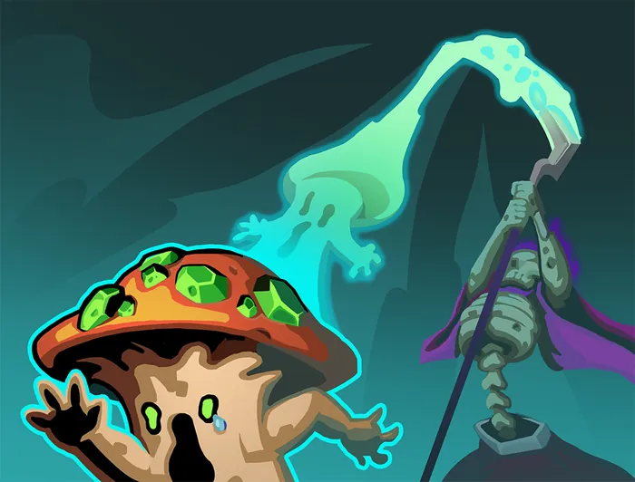
1L'ennemi perd 3 PV.
Ajoutez 3 Âmes à votre Pioche.
L'ennemi perd 4 PV.
Ajoutez 4 Âmes à votre Pioche.
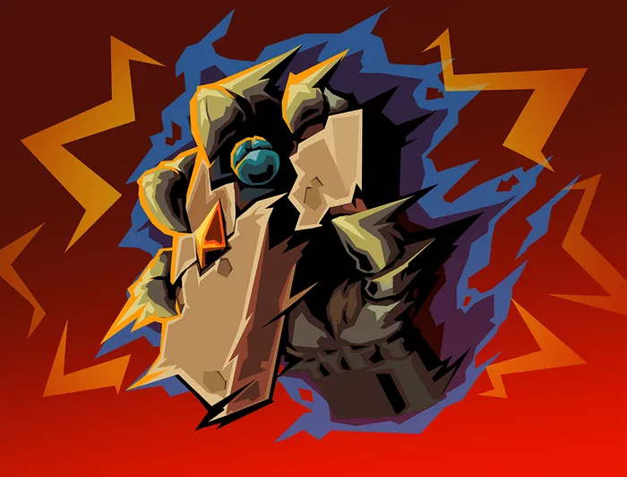
1Titos inflige 7 dégâts.
Se déclenche un nombre de fois supplémentaires égal au nombre de fois qu'il a déjà attaqué ce tour.
Titos inflige 9 dégâts.
Se déclenche un nombre de fois supplémentaires égal au nombre de fois qu'il a déjà attaqué ce tour.
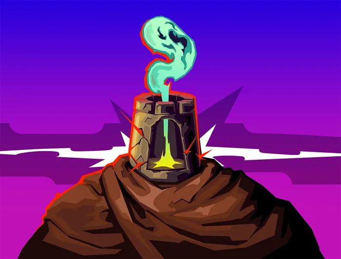
2Infligez 13 dégâts.
Ajoutez une Âme à votre Pioche, à votre Main et à votre Défausse.
Infligez 18 dégâts.
Ajoutez une Âme à votre Pioche, à votre Main et à votre Défausse.
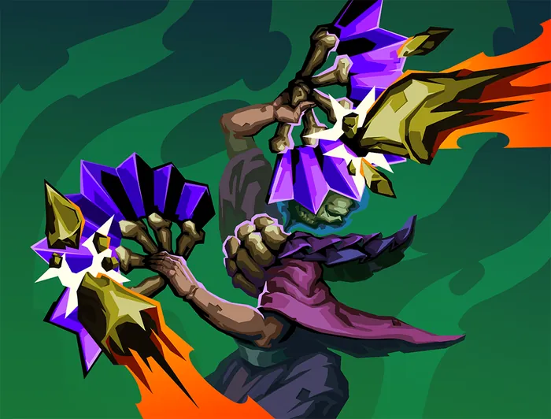
1Lorsque vous jouez une carte qui coûte 2 ● ou plus, gagnez 4 d'Armure.
Lorsque vous jouez une carte qui coûte 2 ● ou plus, gagnez 6 d'Armure.
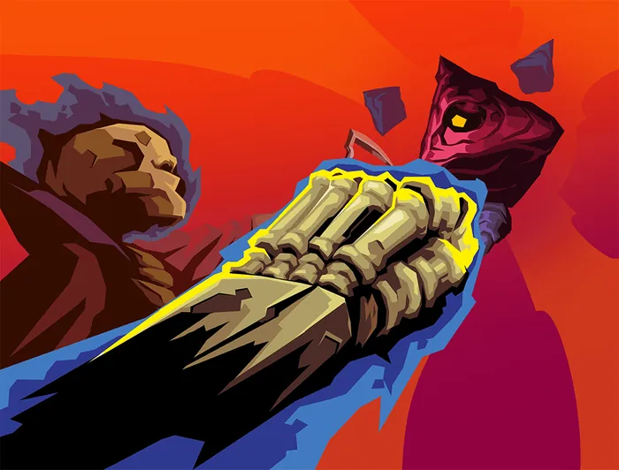
0Titos inflige 4 dégâts.
Lorsque vous jouez une carte qui coûte 2 ● ou plus, cette carte retourne dans votre Main depuis la Défausse.
Titos inflige 6 dégâts.
Lorsque vous jouez une carte qui coûte 2 ● ou plus, cette carte retourne dans votre Main depuis la Défausse.
Éthéré.
Piochez 3 cartes.
Éthéré.
Piochez 4 cartes.
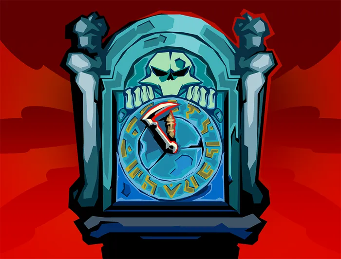
1Au début de votre tour, appliquez 6 de Fatalité à un ennemi aléatoire.
Au début de votre tour, appliquez 9 de Fatalité à un ennemi aléatoire.
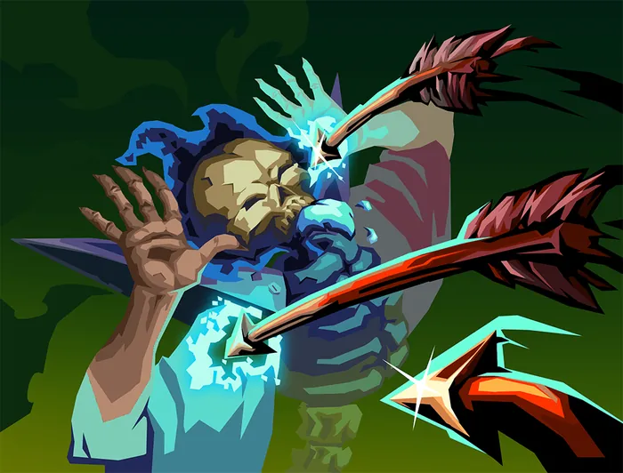
2Gagnez 11 d'Armure.
Au prochain tour,
gagnez 1 ●.
Gagnez 13 d'Armure.
Au prochain tour,
gagnez 2 ●.
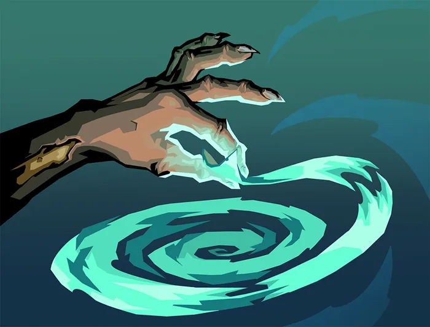
1Placez 3 cartes de votre Défausse dans votre Main.
Épuisement.
Retenue.
Placez 3 cartes de votre Défausse dans votre Main.
Épuisement.
Si Titos est en vie, il inflige 9 dégâts à TOUS les ennemis, et vous gagnez 9 d'Armure.
Titos périt.
Si Titos est en vie, il inflige 12 dégâts à TOUS les ennemis, et vous gagnez 12 d'Armure.
Titos périt.
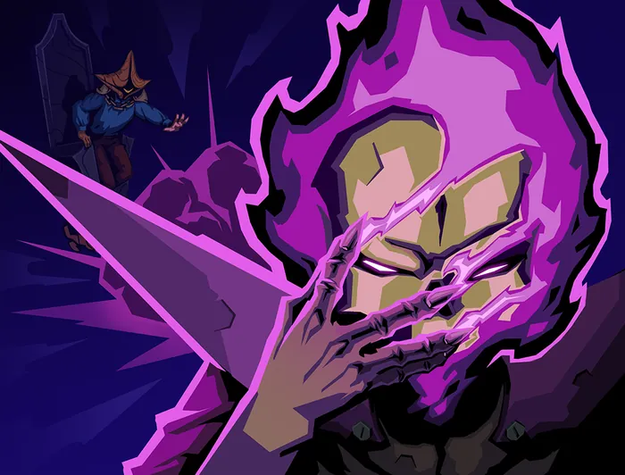
2Lorsque les autres joueurs infligent des dégâts pendant ce tour, appliquez le même montant de Fatalité.
Épuisement.
Lorsque les autres joueurs infligent des dégâts pendant ce tour, appliquez le même montant de Fatalité.
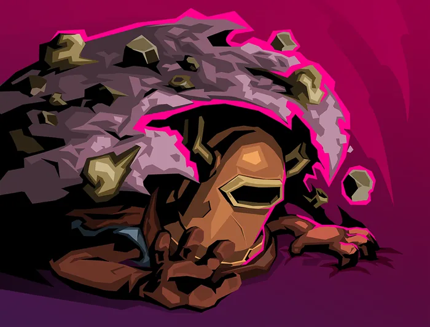
4Infligez 52 dégâts.
Infligez 63 dégâts.
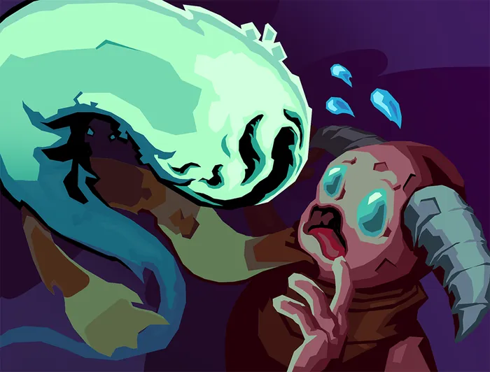
1Lorsque vous jouez une Âme, un ennemi aléatoire perd 7 PV.
Lorsque vous jouez une Âme, un ennemi aléatoire perd 9 PV.
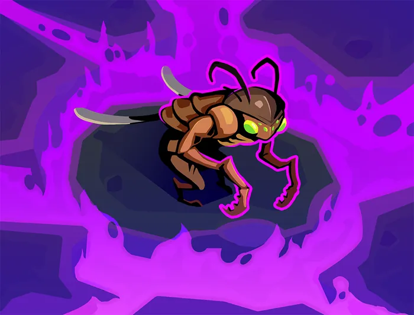
1Appliquez 10 de Fatalité, plus 5 de Fatalité supplémentaire pour tous les 10 points de Fatalité déjà présents sur l'ennemi.
Appliquez 15 de Fatalité, plus 5 de Fatalité supplémentaire pour tous les 10 points de Fatalité déjà présents sur l'ennemi.
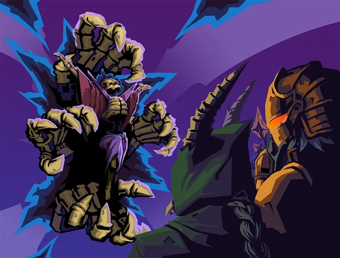
2TOUS les joueurs Invoquent pour 6.
TOUS les joueurs Invoquent pour 8.
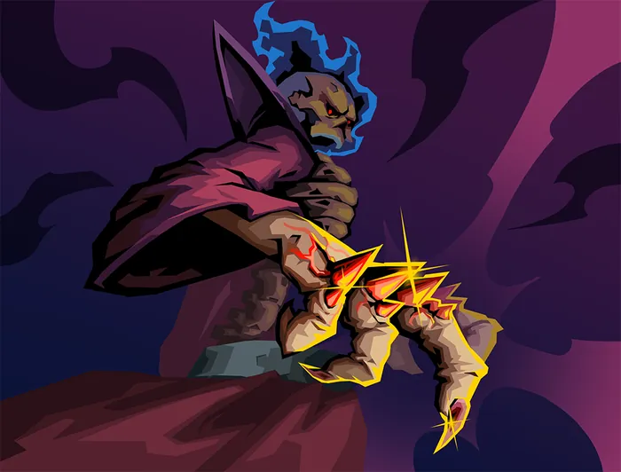
1Éthéré.
La première Attaque jouée chaque tour inflige 50% de dégâts supplémentaires.
Éthéré.
La première Attaque jouée chaque tour inflige 75% de dégâts supplémentaires.
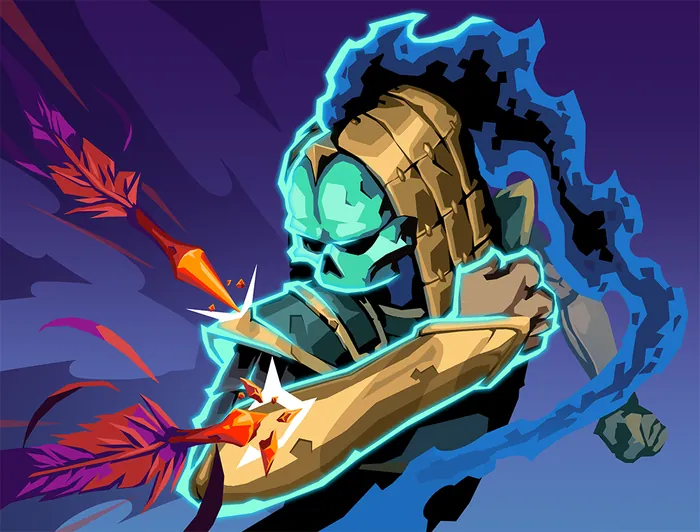
1Infligez 8 dégâts.
Inflige 4 dégâts supplémentaires pour chaque carte piochée durant votre tour.
Infligez 9 dégâts.
Inflige 6 dégâts supplémentaires pour chaque carte piochée durant votre tour.
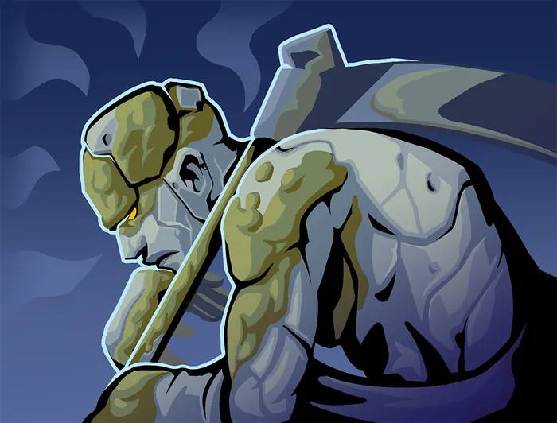
3Gagnez 13 d'Armure.
Réduisez le coût de cette carte de 1 ● lorsque N'IMPORTE QUEL PERSONNAGE périt.
Gagnez 17 d'Armure.
Réduisez le coût de cette carte de 1 ● lorsque N'IMPORTE QUEL PERSONNAGE périt.
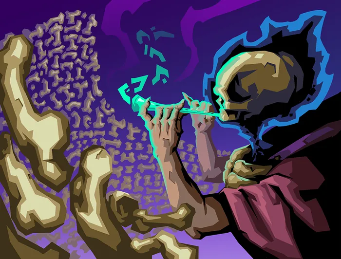
XInvoquez pour 3 X fois.
Ajoutez X Âmes à votre Pioche.
Épuisement.
Invoquez pour 4 X fois.
Ajoutez X Âmes+ à votre Pioche.
Épuisement.
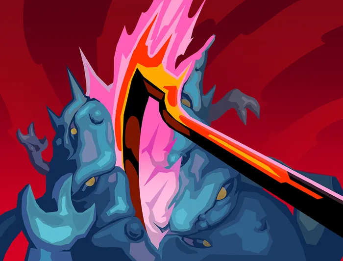
1Infligez 10 dégâts.
La prochaine carte Éthérée que vous jouez coûte 0 ●.
Infligez 13 dégâts.
La prochaine carte Éthérée que vous jouez coûte 0 ●.
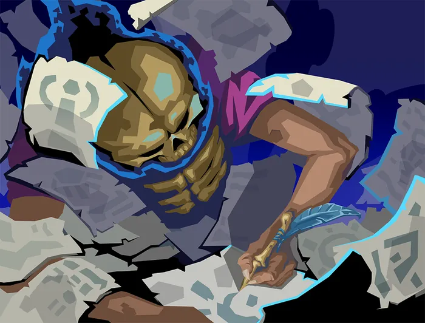
1Lorsque vous piochez une carte Éthérée, piochez 1 carte.
Appliquez 21 de Fatalité et Affaibli (1) à TOUS les ennemis.
Appliquez 26 de Fatalité et Affaibli (1) à TOUS les ennemis.
Invoquez pour 3.
Épuisez 1 carte de votre Pioche.
Invoquez pour 5.
Épuisez 1 carte de votre Pioche.
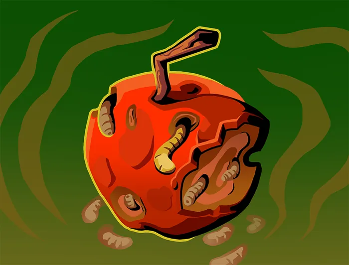
1Appliquez Affaibli (2).
Appliquez Vulnérable (2).
Épuisement.
Appliquez Affaibli (3).
Appliquez Vulnérable (3).
Épuisement.
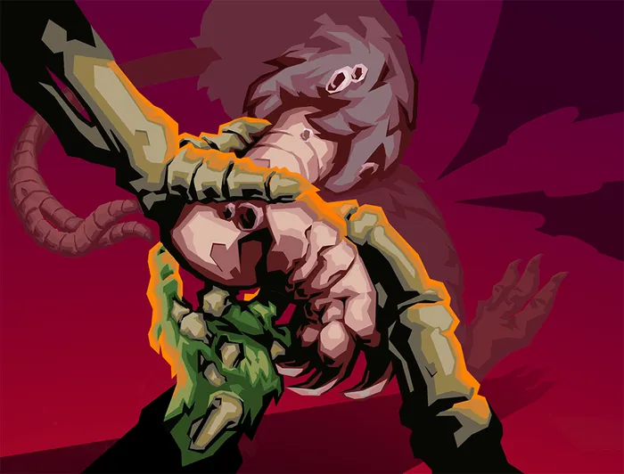
1Infligez 5 dégâts pour chaque carte Éthérée jouée pendant ce combat.
Infligez 7 dégâts pour chaque carte Éthérée jouée pendant ce combat.
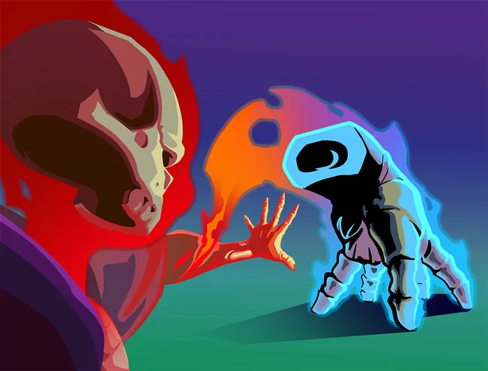
1Retenue.
Invoquez pour 3.
Titos récupère 5 PV.
Retenue.
Invoquez pour 5.
Titos récupère 7 PV.
Gagnez 4 ●.
Les cartes coûtent 1 ● de plus ce tour.
Gagnez 6 ●.
Les cartes coûtent 1 ● de plus ce tour.
Titos inflige 11 dégâts
et applique Vulnérable (2)
à TOUS les ennemis.
Titos inflige 13 dégâts
et applique Vulnérable (3)
à TOUS les ennemis.
Éthéré.
L'ennemi perd 8 de Force jusqu'à la fin du tour.
Éthéré.
L'ennemi perd 11 de Force jusqu'à la fin du tour.
Lorsque vous appliquez un effet néfaste sur un ennemi, celui-ci subit 9 dégâts.
Lorsque vous appliquez un effet néfaste sur un ennemi, celui-ci subit 13 dégâts.
Titos inflige 3 dégâts.
Si c'est la première fois du tour que cette carte est jouée, piochez 1 carte.
Titos inflige 6 dégâts.
Si c'est la première fois du tour que cette carte est jouée, piochez 1 carte.
Lorsque vous appliquez de la Fatalité, gagnez 3 d'Armure.
Lorsque vous appliquez de la Fatalité, gagnez 4 d'Armure.
Gagnez 6 d'Armure.
Si vous avez appliqué de la Fatalité pendant ce tour, gagnez l'Armure 2 fois supplémentaires.
Gagnez 7 d'Armure.
Si vous avez appliqué de la Fatalité pendant ce tour, gagnez l'Armure 2 fois supplémentaires.
Titos inflige 5 dégâts.
Lorsque Titos touche cet ennemi pendant ce tour, Invoquez pour 3.
Titos inflige 6 dégâts.
Lorsque Titos touche cet ennemi pendant ce tour, Invoquez pour 4.
Choisissez un allié.
Lorsque vous créez une Âme, ajoutez une Âme à sa Pioche.
Inné.
Choisissez un allié.
Lorsque vous créez une Âme, ajoutez une Âme à sa Pioche.
Au début de votre tour, ajoutez 1 carte aléatoire à votre Main. Elle gagne Éthéré.
Inné.
Au début de votre tour, ajoutez 1 carte aléatoire à votre Main. Elle gagne Éthéré.
Toutes les 33 cartes piochées par TOUS les joueurs, infligez 66 dégâts à un ennemi aléatoire.
Toutes les 33 cartes piochées par TOUS les joueurs, infligez 99 dégâts à un ennemi aléatoire.
Infligez 33 dégâts à TOUS les ennemis.
Coûte 2 ● de moins pour chaque carte Éthérée jouée pendant ce combat.
Perdez 2 de Force.
L'ennemi perd 2 de Force.
Épuisement.
Perdez 2 de Force.
L'ennemi perd 3 de Force.
Épuisement.
Éthéré.
Au début de votre tour, gagnez 1 ● et piochez 1 carte supplémentaire.
Lorsque vous jouez une Âme, Invoquez pour 1.
Lorsque vous jouez une Âme, Invoquez pour 2.
Jouez TOUTES les cartes Éthérées dans votre pile de cartes Épuisées.
Épuisement.
Lorsque vous jouez une carte Éthérée, gagnez 4 d'Armure.
Lorsque vous jouez une carte Éthérée, gagnez 5 d'Armure.
Appliquez 29 de Fatalité à TOUS les ennemis.
Les ennemis avec au moins autant de Fatalité que de PV périssent.
Appliquez 37 de Fatalité à TOUS les ennemis.
Les ennemis avec au moins autant de Fatalité que de PV périssent.
Lorsque vos Attaques infligent des dégâts, appliquez le même montant de Fatalité.
Retenue.
Lorsque vos Attaques infligent des dégâts, appliquez le même montant de Fatalité.
Gagnez 3 ●.
Piochez 2 cartes.
Au début de votre tour, appliquez 3 de Fatalité à vous-même.
Gagnez 4 ●.
Piochez 2 cartes.
Au début de votre tour, appliquez 3 de Fatalité à vous-même.
Titos inflige 25 dégâts.
Inflige 5 dégâts supplémentaires pour CHACUNE de vos autres Attaques de Titos.
Titos inflige 30 dégâts.
Inflige 6 dégâts supplémentaires pour CHACUNE de vos autres Attaques de Titos.
Infligez un montant de dégâts égal à la quantité de Fatalité sur l'ennemi.
Retenue.
Infligez un montant de dégâts égal à la quantité de Fatalité sur l'ennemi.
Infligez 13 dégâts.
Augmentez les dégâts de cette carte de 5 de façon permanente.
Épuisement.
Infligez 13 dégâts.
Augmentez les dégâts de cette carte de 7 de façon permanente.
Épuisement.
Invoquez pour 5.
Lorsque Titos perd des PV,
TOUS les ennemis en perdent le même montant.
Invoquez pour 8.
Lorsque Titos perd des PV,
TOUS les ennemis en perdent le même montant.
Infligez 7 dégâts.
Appliquez tous les effets néfastes présent sur l'ennemi à TOUS les autres ennemis.
Retenue.
Infligez 9 dégâts.
Appliquez tous les effets néfastes présent sur l'ennemi à TOUS les autres ennemis.
Gagnez 7 d'Armure.
Ajoutez une copie de cette carte à votre Défausse.
Gagnez 9 d'Armure.
Ajoutez une copie de cette carte à votre Défausse.
Lorsque vous jouez une carte ce tour, appliquez 3 de Fatalité sur l'ennemi.
Lorsque vous jouez une carte ce tour, appliquez 4 de Fatalité sur l'ennemi.
Infligez 10 dégâts.
Double les dégâts de TOUTES les cartes Pendaison que vous jouez sur cet ennemi.
Infligez 13 dégâts.
Double les dégâts de TOUTES les cartes Pendaison que vous jouez sur cet ennemi.
Invoquez pour 20.
Épuisement.
Invoquez pour 25.
Épuisement.
Retenue.
Si Titos est en vie, il périt, et vous gagnez un montant d'Armure égal au triple de ses PV Max.
Au début de votre tour, ajoutez 1 Balayage optique à votre Main.
Éthéré.
Transformez une carte de votre Pioche en Âme.
Infligez 9 dégâts.
Inflige 4 dégâts supplémentaires pour chaque Âme dans votre pile de cartes Épuisées.
Infligez 9 dégâts.
Inflige 6 dégâts supplémentaires pour chaque Âme dans votre pile de cartes Épuisées.
Ajoutez Écho à une carte dans votre Main.
Elle coûte 1 ● supplémentaire.
Épuisement.
Ajoutez Écho à une carte dans votre Main.
Elle coûte 1 ● supplémentaire.
TOUS les joueurs ajoutent 3 Âmes à leur Pioche.
Épuisement.
TOUS les joueurs ajoutent 4 Âmes à leur Pioche.
Épuisement.
Retenue.
Infligez 11 dégâts X fois.
Retenue.
Infligez 14 dégâts X fois.
À la fin du combat, vous pouvez retirer une carte de votre Deck.
Éternel.
Titos inflige 10 dégâts.
Inflige un montant de dégâts supplémentaires égal aux PV Max de Titos.
Titos inflige 15 dégâts.
Inflige un montant de dégâts supplémentaires égal aux PV Max de Titos.
Au début de chaque combat, ajoutez 2 cartes Éthérées aléatoires à votre Main.
Chaque fois que Titos attaque, gagnez 2 d'Armure.
Chaque fois qu'un ennemi non-Serviteur succombe à Fatalité, récupérez 3 PV.
À la fin de chaque tour, réduisez le coût d'une carte Retenue aléatoire de 1 jusqu'à ce qu'elle soit jouée.
Au début de votre tour, Invoquez pour 1.
Au début de chaque combat, ajoutez 3 Âmes à votre Pioche.
Lorsque vous jouez une carte qui coûte 3 ● ou plus, gagnez 1 ●.
Les ennemis affligés d'au moins autant de Fatalité que de PV infligent 50% de dégâts en moins.